การจัดการ RBAC#
การจัดการ RBAC (Role-Based Access Control) ช่วยให้ผู้ดูแลระบบระดับสูงสามารถกำหนดบทบาทที่มีสิทธิ์แบบละเอียดและมอบหมายให้กับผู้ใช้ได้ ด้วย RBAC คุณสามารถควบคุมการดำเนินการที่ผู้ใช้เฉพาะสามารถทำได้กับทรัพยากรต่าง ๆ ในระบบ Backend.AI
ในการเข้าถึงหน้าการจัดการ RBAC ให้คลิก การจัดการ RBAC ในส่วน การตั้งค่าผู้ดูแลระบบ ของเมนูแถบด้านข้าง
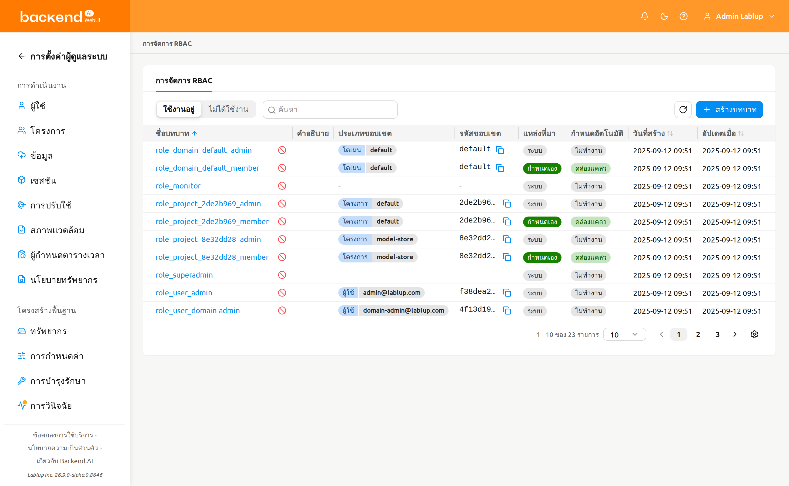
รายการบทบาท#
หน้ารายการบทบาทแสดงบทบาททั้งหมดในรูปแบบตาราง คุณสามารถกรอง ค้นหา และเรียงลำดับบทบาทโดยใช้ตัวควบคุมที่ด้านบนของหน้า
- ตัวกรองสถานะ: ตัวควบคุมแบบแบ่งส่วนสำหรับสลับระหว่างบทบาทใช้งานอยู่และไม่ได้ใช้งาน โดยค่าเริ่มต้นจะเลือกใช้งานอยู่
- ตัวกรองคุณสมบัติ: ตัวกรองคุณสมบัติสำหรับจำกัดรายการ ช่องป้อนค่าของตัวกรองจะปรับเปลี่ยนตามคุณสมบัติที่เลือก มีคุณสมบัติต่อไปนี้ให้ใช้:
- ชื่อ: ข้อความแบบอิสระสำหรับค้นหาตามชื่อบทบาท
- แหล่งที่มา: แสดงค่าที่ใช้ได้ (ระบบ / กำหนดเอง) ในรูปแบบตัวเลือกแทนช่องข้อความแบบอิสระ
- ผู้ใช้ที่ถูกมอบหมาย: ตัวเลือกผู้ใช้ที่กรองรายการให้เหลือเฉพาะบทบาทที่มอบหมายให้กับผู้ใช้ที่เลือก อีเมลของผู้ใช้จะแสดงบนแท็กเงื่อนไขที่สร้างขึ้น
- ประเภทขอบเขต: ตัวเลือกที่แสดงประเภทขอบเขตของ RBAC (เช่น โดเมน, โปรเจกต์, หรือผู้ใช้)
- รหัสขอบเขต: ข้อความแบบอิสระสำหรับค้นหาตาม UUID ขอบเขตดิบ
- สร้างบทบาท: ปุ่มสำหรับสร้างบทบาทแบบกำหนดเองใหม่
ตารางแสดงคอลัมน์ต่อไปนี้:
- ชื่อบทบาท: ชื่อของบทบาท คลิกชื่อเพื่อเปิดแผงรายละเอียดบทบาท
- คำอธิบาย: คำอธิบายสั้น ๆ เกี่ยวกับวัตถุประสงค์ของบทบาท
- ประเภทขอบเขต: ประเภทของขอบเขตแรกที่ถูกกำหนดให้กับบทบาท หากบทบาทมีหลายขอบเขต จะมีการแสดง
+Nกำกับไว้ด้วย - ID ขอบเขต: ID ดั้งเดิมของขอบเขตแรกที่กำหนดให้กับบทบาท หากบทบาทมีหลายขอบเขต จะมีการแสดง
+Nกำกับไว้ด้วย - แหล่งที่มา: ระบุว่าบทบาทเป็นระบบ (กำหนดไว้ล่วงหน้า) หรือกำหนดเอง (สร้างโดยผู้ใช้)
- มอบหมายอัตโนมัติ: ระบุว่าบทบาทถูกมอบหมายให้กับผู้ใช้โดยอัตโนมัติเมื่อมีการเพิ่มผู้ใช้เข้าสู่ขอบเขตที่บทบาทนั้นลงทะเบียนไว้หรือไม่ แสดงใช้งานอยู่เมื่อเปิดใช้การมอบหมายอัตโนมัติ หรือไม่ได้ใช้งานเมื่อปิดใช้
- วันที่สร้าง: วันที่และเวลาที่สร้างบทบาท
- วันที่อัปเดต: วันที่และเวลาที่แก้ไขบทบาทล่าสุด
บทบาทระบบและบทบาทกำหนดเอง#
บทบาทแบ่งออกเป็นสองประเภทแหล่งที่มา:
- ระบบ: บทบาทที่สร้างขึ้นโดยอัตโนมัติ ไม่สามารถแก้ไขชื่อหรือคำอธิบายได้ แต่สามารถจัดการการมอบหมายผู้ใช้และสิทธิ์ได้
- กำหนดเอง: บทบาทที่สร้างโดยผู้ดูแลระบบระดับสูง สามารถแก้ไขได้ทั้งหมด รวมถึงชื่อ คำอธิบาย การมอบหมาย ขอบเขต และสิทธิ์
การสร้างบทบาท#
ในการสร้างบทบาท คุณต้องกำหนดขอบเขตล่วงหน้า ขอบเขตจะผูกบทบาทเข้ากับเอนทิตีทรัพยากรที่ระบุ (เช่น โดเมน โปรเจกต์ หรือผู้ใช้) เพื่อให้สิทธิ์ทุกข้อที่เพิ่มในภายหลังถูกจำกัดให้อยู่ภายในขอบเขตที่กำหนดไว้ที่นี่เท่านั้น
ในการสร้างบทบาทแบบกำหนดเองใหม่:
- คลิกปุ่ม สร้างบทบาท ที่มุมขวาบนของหน้ารายการบทบาท
- ในโมดอลการสร้าง ให้กรอกฟิลด์ต่อไปนี้:
- ชื่อบทบาท (จำเป็น): ป้อนชื่อบทบาทที่ไม่ซ้ำกัน
- คำอธิบาย (ไม่บังคับ): ป้อนคำอธิบายเกี่ยวกับวัตถุประสงค์ของบทบาท
- มอบหมายอัตโนมัติ (ไม่บังคับ): เมื่อเปิดใช้งาน บทบาทจะถูกมอบหมายให้กับผู้ใช้โดยอัตโนมัติเมื่อมีการเพิ่มผู้ใช้เข้าสู่ขอบเขตที่บทบาทนั้นลงทะเบียนไว้ ปิดใช้งานโดยค่าเริ่มต้น
- ประเภทขอบเขต / เป้าหมาย (จำเป็น, อย่างน้อย 1 รายการ): สำหรับแต่ละแถวขอบเขต เลือกประเภทขอบเขตก่อน จากนั้นเลือกเป้าหมายเฉพาะภายในประเภทขอบเขตนั้น คลิก เพิ่ม เพื่อเพิ่มแถวขอบเขตอีก หรือคลิกไอคอนลบเพื่อลบแถว คุณต้องเพิ่มขอบเขตอย่างน้อยหนึ่งรายการ
- คลิก ตกลง เพื่อสร้างบทบาท
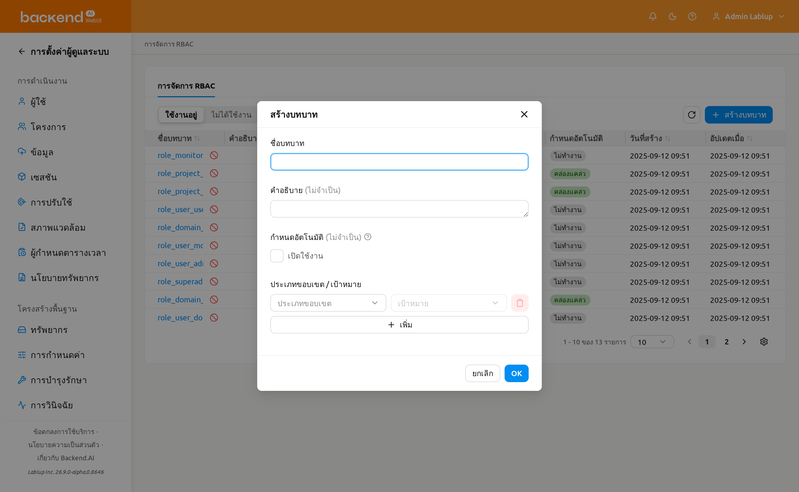
ประเภทขอบเขตและเป้าหมายที่คุณกำหนดเมื่อสร้างบทบาทจะไม่ให้สิทธิ์ใด ๆ ด้วยตัวมันเอง แต่จะกำหนดล่วงหน้าว่ามีประเภทขอบเขต / เป้าหมายใดบ้างที่สามารถเลือกได้เมื่อคุณเพิ่มสิทธิ์ให้กับบทบาทนี้ในภายหลัง กล่าวคือ ขั้นตอนการสร้างบทบาทเป็นเพียงการจำกัดขอบเขตของประเภทขอบเขตและเป้าหมายที่สิทธิ์ของบทบาทนี้สามารถใช้ได้ไว้ล่วงหน้า และสิทธิ์แต่ละข้อจะตั้งค่าได้เฉพาะภายในประเภทขอบเขตและเป้าหมายที่กำหนดไว้ที่นี่เท่านั้น
ขอบเขตถูกกำหนดในเวลาสร้างบทบาท และไม่สามารถแก้ไขได้ในภายหลังผ่านแผงรายละเอียดบทบาท โปรดวางแผนขอบเขตอย่างรอบคอบก่อนสร้างบทบาท
ดูรายละเอียดบทบาท#
ในการดูข้อมูลรายละเอียดของบทบาท ให้คลิกชื่อบทบาทในตาราง แผงรายละเอียดจะเปิดขึ้นทางด้านขวาของหน้า
ส่วนหัวของแผงจะแสดงชื่อบทบาทและมีปุ่มแก้ไขสำหรับบทบาทแบบกำหนดเอง ส่วนรายละเอียดจะแสดงข้อมูลเมตาต่อไปนี้:
- แหล่งที่มา: ระบบ หรือ กำหนดเอง
- สถานะ: ใช้งานอยู่ หรือ ไม่ได้ใช้งาน
- มอบหมายอัตโนมัติ: ระบุว่าการมอบหมายอัตโนมัตินั้นใช้งานอยู่หรือไม่ได้ใช้งาน เมื่อใช้งานอยู่ บทบาทจะถูกมอบหมายให้กับผู้ใช้ที่เพิ่มเข้าสู่ขอบเขตที่ลงทะเบียนไว้แห่งใดแห่งหนึ่งโดยอัตโนมัติ
- วันที่สร้าง: เวลาที่สร้าง
- วันที่อัปเดต: เวลาที่แก้ไขล่าสุด
- คำอธิบาย: คำอธิบายของบทบาท
ด้านล่างข้อมูลเมตามีสองแท็บ: สิทธิ์ และ การมอบหมายบทบาท โดยค่าเริ่มต้นจะเลือกแท็บ สิทธิ์
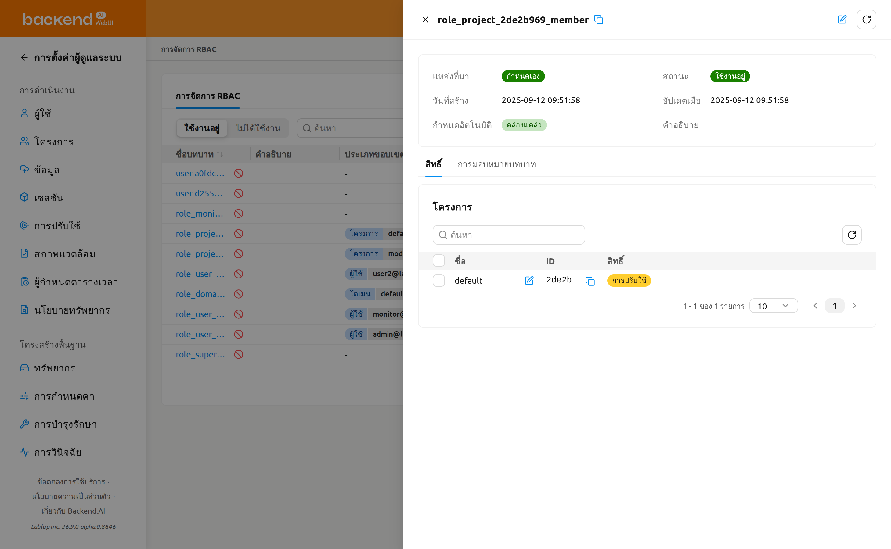
การแก้ไขบทบาท#
ในการแก้ไขชื่อ คำอธิบาย หรือการตั้งค่าการมอบหมายอัตโนมัติของบทบาทแบบกำหนดเอง:
- คลิกชื่อบทบาทในตารางเพื่อเปิดแผงรายละเอียด
- คลิกปุ่มแก้ไข (ไอคอนดินสอ) ในส่วนหัวของแผง
- แก้ไขฟิลด์ต่อไปนี้ในโมดอลแก้ไข:
- ชื่อบทบาท: ชื่อของบทบาท
- คำอธิบาย: คำอธิบายเกี่ยวกับวัตถุประสงค์ของบทบาท
- มอบหมายอัตโนมัติ: เมื่อเปิดใช้งาน บทบาทจะถูกมอบหมายให้กับผู้ใช้ที่เพิ่มเข้าสู่ขอบเขตที่บทบาทนั้นลงทะเบียนไว้โดยอัตโนมัติ
- คลิก ตกลง เพื่อบันทึกการเปลี่ยนแปลง
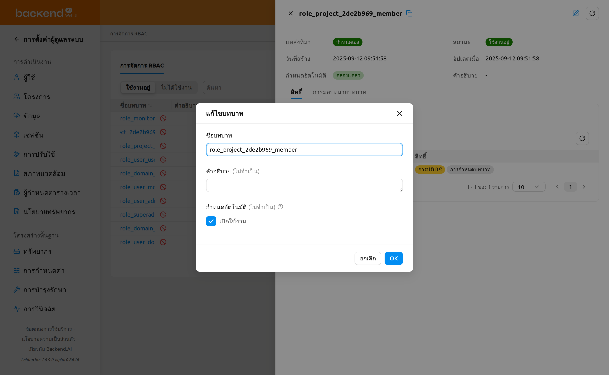
ปุ่มแก้ไขใช้ได้เฉพาะกับบทบาทแบบกำหนดเองเท่านั้น ไม่สามารถแก้ไขชื่อหรือคำอธิบายของบทบาทระบบได้ และไม่สามารถแก้ไขขอบเขตหลังจากที่สร้างบทบาทแล้วในทั้งสองกรณี
การจัดการสิทธิ์#
แท็บสิทธิ์ในแผงรายละเอียดบทบาทเป็นมุมมองรายละเอียดแบบรวมที่ผสานขอบเขตของบทบาทกับสิทธิ์แบบละเอียดเข้าด้วยกัน โดยจะแสดงการ์ดหนึ่งใบต่อประเภทขอบเขตที่บทบาทใช้ และการ์ดแต่ละใบจะแสดงขอบเขตของประเภทขอบเขตนั้นพร้อมกับสิทธิ์ที่มอบให้กับขอบเขตเหล่านั้น
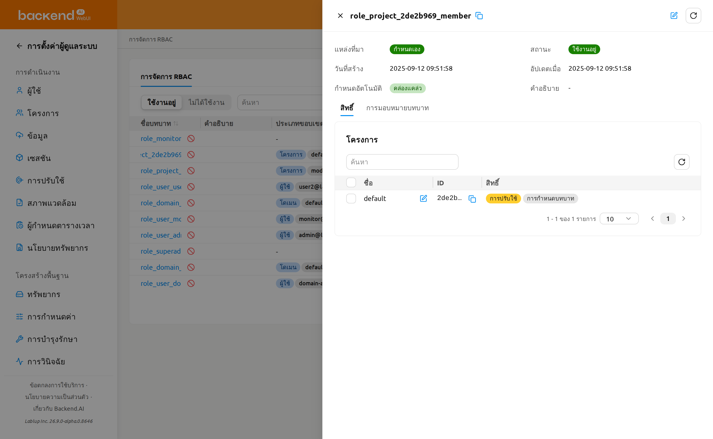
ขอบเขตที่บทบาทสามารถอ้างอิงได้จะถูกกำหนดเมื่อสร้างบทบาทและเป็นแบบอ่านอย่างเดียวหลังจากนั้น คุณไม่สามารถเปลี่ยนได้จากแผงรายละเอียดบทบาท ในแท็บสิทธิ์ ขอบเขตจะปรากฏเป็นแถวภายในการ์ดของแต่ละประเภทขอบเขต หากต้องการเปลี่ยนขอบเขตของบทบาท ให้สร้างบทบาทใหม่พร้อมกับขอบเขตที่ต้องการ
การ์ดประเภทขอบเขต#
แท็บสิทธิ์จะแสดงการ์ดหนึ่งใบสำหรับแต่ละประเภทขอบเขตที่บทบาทใช้ (เช่น โดเมน, โปรเจกต์, หรือผู้ใช้) ประเภทขอบเขตที่บทบาทไม่ได้ใช้จะถูกซ่อนไว้ และชื่อการ์ดคือชื่อประเภทขอบเขตที่ได้รับการแปลตามภาษา การ์ดแต่ละใบประกอบด้วย:
- ตัวกรองรหัสขอบเขต: ตัวกรองคุณสมบัติที่จำกัดแถวของการ์ดตาม UUID ขอบเขตดิบ ไม่รองรับการค้นหาด้วยชื่อขอบเขตที่ได้รับการแปล
- ปุ่มรีเฟรช: โหลดแถวของการ์ดใหม่และคำนวณแท็กสิทธิ์อีกครั้ง
- ตารางขอบเขต: แสดงขอบเขตของบทบาทที่เป็นประเภทนี้ พร้อมคอลัมน์ต่อไปนี้:
- ชื่อ: ชื่อขอบเขตที่ได้รับการแปล (เช่น ชื่อที่แสดงของโดเมน, โปรเจกต์, หรือผู้ใช้) พร้อมการดำเนินการแก้ไขแบบอินไลน์ที่เปิดโมดอลแก้ไขสิทธิ์สำหรับขอบเขตนั้น
- ID: UUID ขอบเขต
- สิทธิ์: หนึ่งแท็กต่อประเภทสิทธิ์ ซึ่งมีสีตามสถานะการมอบสิทธิ์ (ดูด้านล่าง) เมื่อประเภทขอบเขตไม่มีเอนทิตีที่ตั้งค่าได้ คอลัมน์นี้จะแสดง
-
- การแบ่งหน้า: แบ่งขอบเขตของการ์ดออกเป็นหน้าเมื่อมีจำนวนมาก
หากบทบาทไม่มีขอบเขตเลย แท็บจะแสดงข้อความ ไม่มีขอบเขตที่กำหนดไว้สำหรับบทบาทนี้ แทนการ์ดใด ๆ
แท็กสถานะการมอบสิทธิ์#
ในคอลัมน์ สิทธิ์ แต่ละแท็กประเภทสิทธิ์จะมีสีตามจำนวนการดำเนินการของประเภทนั้นที่ถูกมอบให้กับขอบเขต:
- อนุญาตทั้งหมด (สีเขียว): การดำเนินการทุกอย่างของประเภทสิทธิ์นั้นถูกมอบให้
- อนุญาตบางส่วน (สีเหลือง): มีการดำเนินการบางอย่างถูกมอบให้ แต่ไม่ทั้งหมด
- ไม่อนุญาต (ไม่มีสี): ไม่มีการดำเนินการใดถูกมอบให้
วางเคอร์เซอร์เหนือแท็กเพื่อดูป้ายสถานะของแท็ก
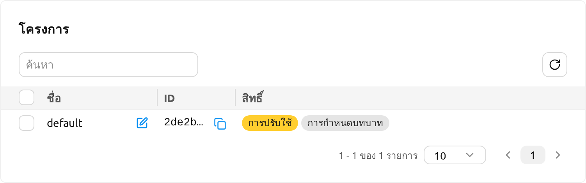
ทำความเข้าใจเกี่ยวกับสิทธิ์#
แต่ละสิทธิ์ประกอบด้วยสี่องค์ประกอบ:
- ประเภทขอบเขต: ขอบเขตที่มีผลซึ่งสิทธิ์จะถูกนำไปใช้ (เช่น โดเมน, โปรเจกต์, ผู้ใช้)
- เป้าหมาย: เอนทิตีเฉพาะภายในขอบเขตที่มีผล (เช่น ชื่อโดเมนเฉพาะ, โปรเจกต์เฉพาะ)
- ประเภทสิทธิ์: เป้าหมายที่การดำเนินการถูกกระทำภายในขอบเขตที่มีผลของสิทธิ์
- สิทธิ์: การดำเนินการที่อนุญาตสำหรับประเภทสิทธิ์ จะแสดงเฉพาะการดำเนินการที่ถูกต้องสำหรับประเภทสิทธิ์ที่เลือกเท่านั้น การดำเนินการแบ่งออกเป็นสองหมวดหมู่:
- โดยตรง: สร้าง, อ่าน, แก้ไข, ลบ, ลบถาวร
- มอบหมายให้ผู้อื่น: มอบหมายสิทธิ์ทั้งหมด, มอบหมายสิทธิ์อ่าน, มอบหมายสิทธิ์แก้ไข, มอบหมายสิทธิ์ลบ, มอบหมายสิทธิ์ลบถาวร
การรวม ประเภทขอบเขต / เป้าหมาย ของแต่ละสิทธิ์ได้รับการสืบทอดมาจากรายการขอบเขตของบทบาท คุณสามารถมอบสิทธิ์ได้เฉพาะบนขอบเขตที่กำหนดไว้เมื่อสร้างบทบาทเท่านั้น หากต้องการขยายการเข้าถึงของบทบาท ให้สร้างบทบาทใหม่พร้อมกับขอบเขตเพิ่มเติม
ตัวอย่างการตั้งค่าสิทธิ์#
ต่อไปนี้คือตัวอย่างการตั้งค่าสิทธิ์ทั่วไปเพื่อช่วยให้คุณเข้าใจว่าองค์ประกอบทั้งสี่ทำงานร่วมกันอย่างไร คอลัมน์ ประเภทขอบเขต / เป้าหมาย แสดงขอบเขตระดับบทบาทที่สิทธิ์นำมาใช้ซ้ำ
| สถานการณ์ | ประเภทขอบเขต / เป้าหมาย | ประเภทสิทธิ์ | สิทธิ์ |
|---|---|---|---|
| อนุญาตให้สร้างโฟลเดอร์จัดเก็บในโปรเจกต์เฉพาะ | โปรเจกต์ / my-project | โฟลเดอร์ | สร้าง |
| อนุญาตให้ดูเซสชันทั้งหมดในโดเมนที่ระบุ | โดเมน / default | เซสชัน | อ่าน |
| อนุญาตให้จัดการบริการโมเดลในโดเมนที่ระบุ | โดเมน / default | บริการโมเดล | สร้าง, อ่าน, แก้ไข |
| อนุญาตให้ลบคอนเทนเนอร์อิมเมจในโดเมนที่ระบุ | โดเมน / default | อิมเมจ | ลบ |
แก้ไขสิทธิ์สำหรับขอบเขต (ขอบเขตเดียว)#
สิทธิ์จะถูกแก้ไขทีละขอบเขตผ่านโมดอลแบบกริด โดยที่แต่ละแถวคือประเภทสิทธิ์และแต่ละเซลล์คือช่องทำเครื่องหมายการดำเนินการ
- ในแท็บ สิทธิ์ เปิดการ์ดประเภทขอบเขตและคลิกการดำเนินการ แก้ไข บนแถวขอบเขตที่คุณต้องการเปลี่ยน
- โมดอล แก้ไขสิทธิ์ {ประเภทขอบเขต} จะเปิดขึ้นโดยแสดงชื่อขอบเขตเป็นคำบรรยายย่อย จะแสดงกริดที่:
- แถวคือ ประเภทสิทธิ์ ที่ถูกต้องสำหรับประเภทขอบเขต
- คอลัมน์แบ่งเป็นกลุ่ม โดยตรง (สร้าง, อ่าน, แก้ไข, ลบ, ลบถาวร) และ มอบหมายให้ผู้อื่น (ทั้งหมด, อ่าน, แก้ไข, ลบ, ลบถาวร)
- เซลล์ที่เมทริกซ์สิทธิ์ไม่รองรับจะแสดงเป็น
-พร้อมคำแนะนำ ไม่สามารถมอบหมายสิทธิ์นี้ได้
- ช่องทำเครื่องหมายแต่ละช่องจะถูกเลือกไว้ล่วงหน้าตามการดำเนินการที่มอบให้กับขอบเขตในปัจจุบัน เลือกหรือยกเลิกการเลือกเซลล์เพื่อเปลี่ยนสิ่งที่อนุญาต
- คลิก บันทึก การเปลี่ยนแปลงจะถูกกระทบกับการมอบสิทธิ์ปัจจุบันของขอบเขต — เซลล์ที่เลือกใหม่จะถูกมอบให้และเซลล์ที่ยกเลิกจะถูกลบออก
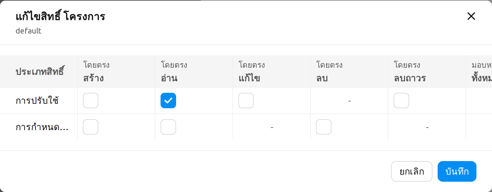
การแก้ไขสิทธิ์เป็นการดำเนินการที่ย้อนกลับได้ — คุณสามารถเปิดโมดอลอีกครั้งและเปลี่ยนกริดได้ตลอดเวลา — ดังนั้นการบันทึกจึงใช้ปุ่ม บันทึก ปกติแทนการยืนยันด้วยการพิมพ์ชื่อ
แก้ไขสิทธิ์สำหรับหลายขอบเขต (เป็นชุด)#
คุณสามารถใช้การเปลี่ยนแปลงสิทธิ์เดียวกันกับหลายขอบเขตที่เป็นประเภทเดียวกันพร้อมกันได้
- ในการ์ดประเภทขอบเขต ใช้ช่องทำเครื่องหมายแถวเพื่อเลือกขอบเขตตั้งแต่สองรายการขึ้นไป ป้ายแสดงจำนวนที่เลือกจะปรากฏขึ้น ใช้ตัวควบคุมดินสอ (แก้ไขสิทธิ์) ถัดจากป้ายนั้นเพื่อเปิดโมดอลแบบชุด
- โมดอล แก้ไขสิทธิ์ {ประเภทขอบเขต} เป็นชุด จะเปิดขึ้น ทุกเซลล์จะเริ่มต้นในสถานะ คงค่าเดิม เซลล์ที่ไม่ได้แตะจะคงค่าปัจจุบันของแต่ละขอบเขตที่เลือกไว้ และเฉพาะเซลล์ที่คุณสลับเป็นโหมดแก้ไขเท่านั้นที่จะถูกนำไปใช้กับทุกขอบเขตที่เลือก
- คลิกเซลล์เพื่อสลับเป็นโหมดแก้ไข (เริ่มต้นในสถานะเลือกไว้) เลือกหรือยกเลิกการเลือกเพื่อกำหนดค่าที่จะนำไปใช้กับทุกขอบเขตที่เลือก
- คลิก บันทึก เพื่อใช้การเปลี่ยนแปลงกับทุกขอบเขตที่เลือก
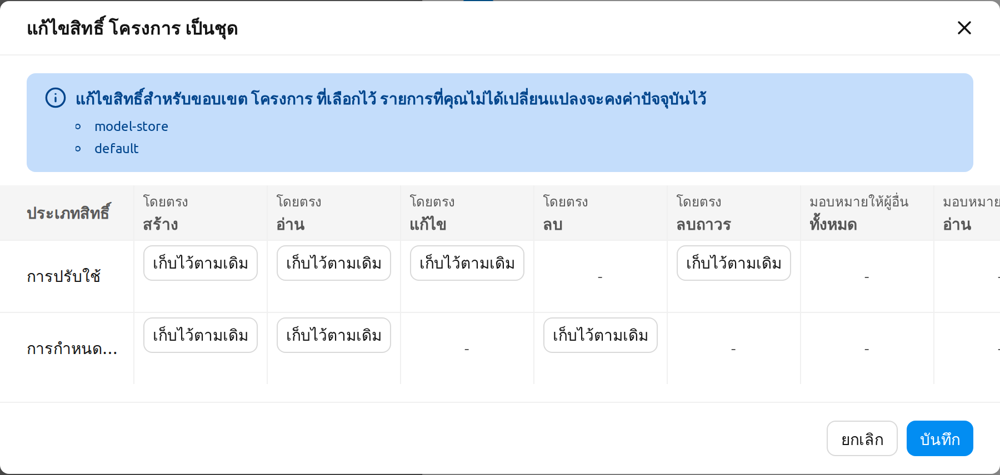
พฤติกรรมกรณีไม่มีการเปลี่ยนแปลงและกรณีล้มเหลวบางส่วน#
เมื่อคุณบันทึกการเปลี่ยนแปลงสิทธิ์:
- หากไม่มีการเปลี่ยนแปลง โมดอลจะปิดโดยไม่ส่งคำขอ และแสดงข้อความ ไม่มีการเปลี่ยนแปลง.
- เมื่อสำเร็จ จะแสดงข้อความ บันทึกสิทธิ์สำเร็จแล้ว และแท็กของการ์ดจะถูกคำนวณใหม่
- ในกรณีล้มเหลวบางส่วน โมดอลจะยังคงเปิดอยู่โดยมีการทำเครื่องหมายเซลล์ที่ล้มเหลว โมดอลข้อผิดพลาดแบบชุดจะแสดงคำขอที่ล้มเหลวแต่ละรายการ — ขอบเขตเป้าหมาย, สิทธิ์, และข้อความแสดงข้อผิดพลาด — พร้อมจำนวนที่สำเร็จและล้มเหลว คุณสามารถปรับกริดและบันทึกอีกครั้งเพื่อลองใหม่เฉพาะเซลล์ที่ล้มเหลว
การจัดการการมอบหมายผู้ใช้#
แท็บ การมอบหมายบทบาท ในแผงรายละเอียดบทบาทจะแสดงผู้ใช้ที่ถูกมอบหมายให้กับบทบาท
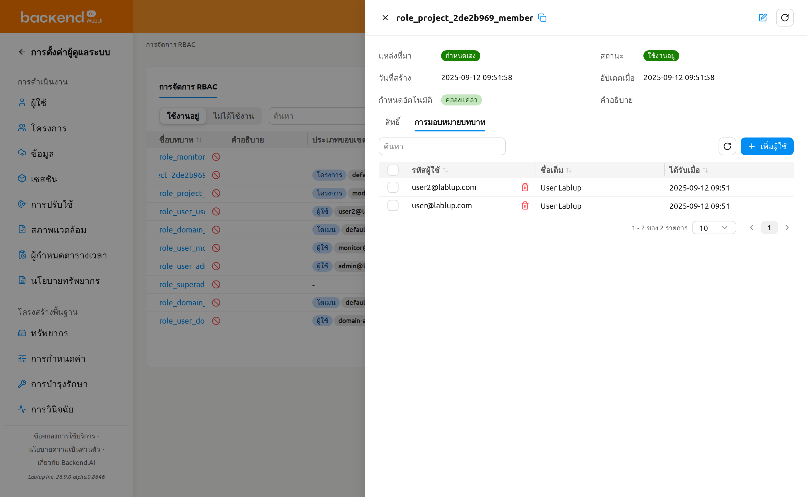
การเพิ่มผู้ใช้ในบทบาท#
- เปิดแผงรายละเอียดบทบาทและเลือกแท็บ การมอบหมายบทบาท
- คลิกปุ่ม เพิ่มผู้ใช้
- ในโมดอล ค้นหาผู้ใช้ตามอีเมลหรือชื่อ
- เลือกผู้ใช้หนึ่งคนขึ้นไปโดยใช้ช่องทำเครื่องหมาย
- คลิก มอบหมาย เพื่อมอบหมายผู้ใช้ที่เลือกให้กับบทบาท
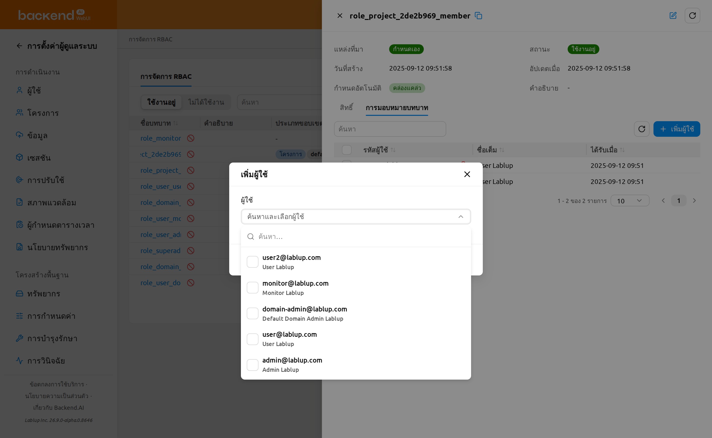
การเพิ่มผู้ใช้เป็นการดำเนินการแบบกลุ่ม คุณสามารถเลือกผู้ใช้หลายคนในครั้งเดียวและมอบหมายทั้งหมดพร้อมกันได้ หากการมอบหมายบางรายการล้มเหลว โมดอลจะยังคงเปิดอยู่ และโมดอลข้อผิดพลาดแบบชุดจะแสดงผู้ใช้ที่ล้มเหลวแต่ละรายพร้อมข้อความแสดงข้อผิดพลาดและจำนวนที่สำเร็จและล้มเหลว ผู้ใช้ที่ถูกมอบหมายสำเร็จจะถูกล้างออกจากการเลือก ดังนั้นจึงเหลือเฉพาะผู้ใช้ที่ล้มเหลวที่ถูกเลือกไว้ และคุณสามารถคลิก เพิ่มผู้ใช้ อีกครั้งเพื่อลองใหม่เฉพาะผู้ใช้เหล่านั้น
บทบาทระบบและข้อจำกัดในการมอบหมาย#
บทบาทผู้ดูแลโปรเจกต์ที่ระบบสร้างขึ้น (บทบาท role_project_<project_id>_admin ที่มีแหล่งที่มาเป็นระบบ) ไม่สามารถมอบหมายหรือเพิกถอนผู้ใช้ได้โดยตรงจากแท็บการมอบหมายบทบาท แท็บนี้จะแสดงการแจ้งเตือน บทบาทที่ระบบสร้างขึ้นโดยอัตโนมัติไม่สามารถมอบหมายหรือนำผู้ใช้ออกได้โดยตรง และตารางการมอบหมายจะเป็นแบบอ่านอย่างเดียว (ตัวควบคุม เพิ่มผู้ใช้ และการเพิกถอนจะถูกซ่อนไว้)
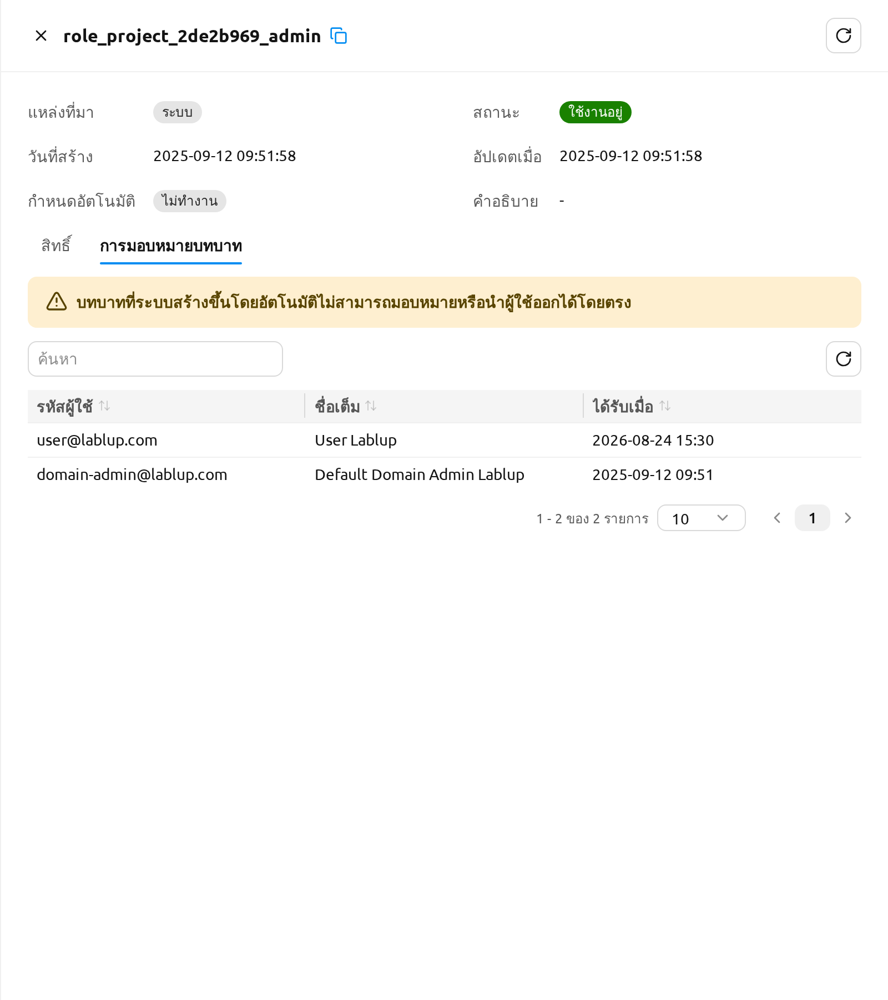
หากต้องการจัดการผู้ที่ดูแลโปรเจกต์ ให้ใช้ ตั้งค่าผู้ดูแลโปรเจกต์ บนหน้าโปรเจกต์แทน ดูที่ตั้งค่าผู้ดูแลโปรเจกต์ในบทฟีเจอร์สำหรับผู้ดูแลโปรเจกต์ และการมอบสิทธิ์ผู้ดูแลโปรเจกต์ด้านล่าง
การเพิกถอนผู้ใช้จากบทบาท#
คุณสามารถเพิกถอนผู้ใช้คนเดียวหรือหลายคนพร้อมกันได้
ในการเพิกถอนผู้ใช้คนเดียว:
- ในแท็บ การมอบหมายบทบาท วางเมาส์เหนือแถวผู้ใช้แล้วคลิกไอคอนเพิกถอน (ถังขยะ) ถัดจากผู้ใช้
- โมดอลยืนยัน นำผู้ใช้ออกจากบทบาท จะเปิดขึ้น ตรวจสอบผู้ใช้ที่แสดงในรายการ จากนั้นคลิก นำผู้ใช้ออกจากบทบาท เพื่อยืนยัน หรือ ยกเลิก เพื่อปิด
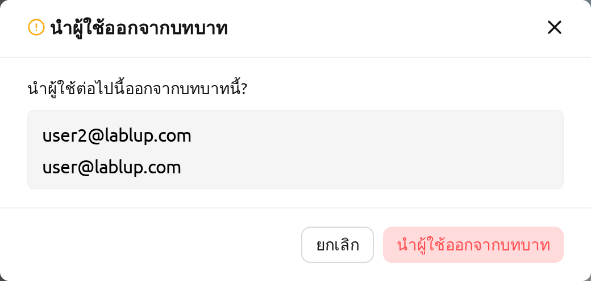
ในการเพิกถอนผู้ใช้หลายคนพร้อมกัน:
- ในแท็บ การมอบหมายบทบาท ใช้ช่องทำเครื่องหมายเพื่อเลือกผู้ใช้ที่ต้องการนำออก ป้ายแสดงจำนวนที่เลือกจะปรากฏถัดจากตัวควบคุมการเพิกถอน โดยแสดงจำนวนแถวที่เลือกไว้ ใช้ตัวควบคุมล้างการเลือกบนป้ายนั้นเพื่อยกเลิกการเลือกทุกแถว
- คลิกปุ่ม นำผู้ใช้ออกจากบทบาท แบบกลุ่ม (ไอคอนถังขยะ) ที่ปรากฏขึ้นเมื่อมีการเลือกหนึ่งแถวขึ้นไป
- ในโมดอลยืนยัน นำผู้ใช้ออกจากบทบาท ตรวจสอบผู้ใช้ที่แสดงในรายการ จากนั้นคลิก นำผู้ใช้ออกจากบทบาท เพื่อยืนยัน หรือ ยกเลิก เพื่อปิด
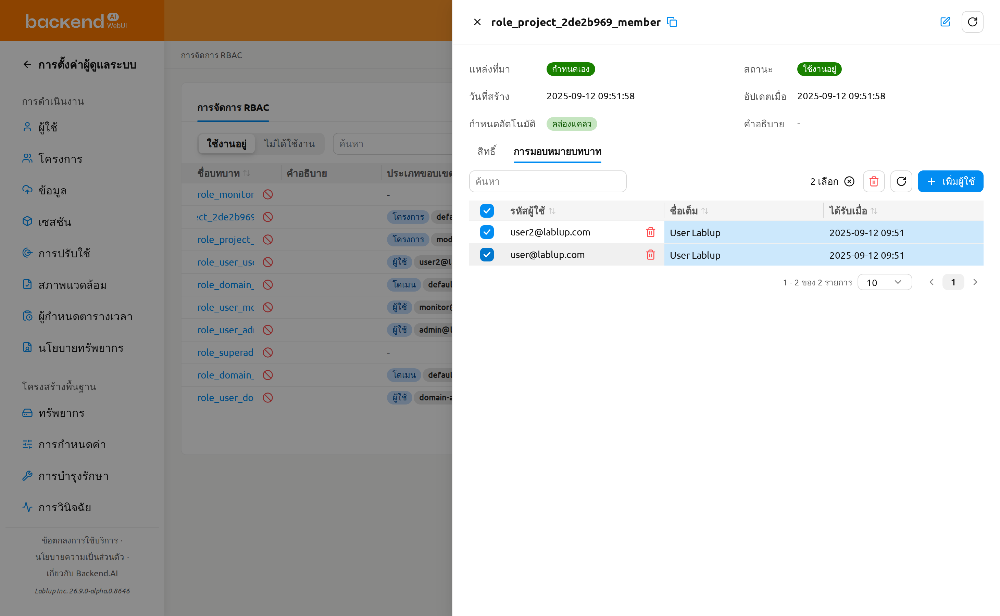
การเพิกถอนผู้ใช้จะลบเฉพาะการมอบหมายของผู้ใช้นั้นกับบทบาทนี้เท่านั้น บทบาทและการมอบหมายอื่น ๆ ยังคงไม่เปลี่ยนแปลง
การเพิกถอนการมอบหมายบทบาทสามารถยกเลิกได้โดยการเพิ่มผู้ใช้กลับเข้าสู่บทบาทจากแท็บ การมอบหมายบทบาท
การมอบสิทธิ์ผู้ดูแลโปรเจกต์#
เมื่อสร้างโปรเจกต์ ระบบจะสร้างบทบาทเฉพาะชื่อ role_project_<project_id>_admin ขึ้นมาด้วย โดย <project_id> คือ 8 ตัวอักษรแรกของ UUID ของโปรเจกต์นั้น ผู้ใช้ที่ถูกมอบหมายให้กับบทบาทนี้จะได้รับสิทธิ์ ผู้ดูแลโปรเจกต์ เหนือโปรเจกต์ดังกล่าวโดยเฉพาะ ผู้ใช้สามารถจัดการผู้ใช้ เซสชัน การปรับใช้ และโฟลเดอร์จัดเก็บของโปรเจกต์ได้โดยไม่ต้องมีสิทธิ์ผู้ดูแลระบบระดับสูงทั่วทั้งระบบ
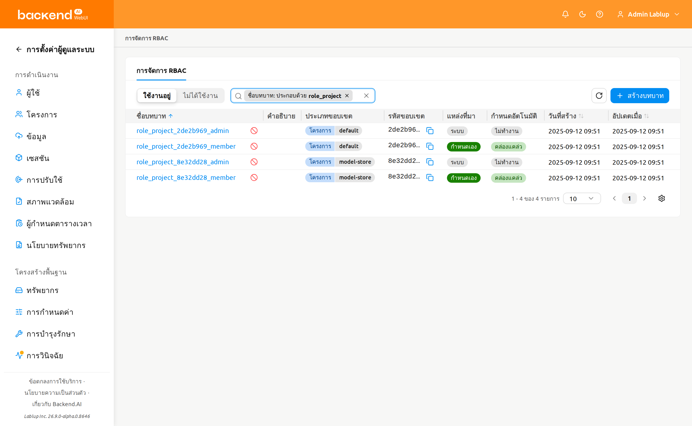
มอบและเพิกถอนสิทธิ์ผู้ดูแลโปรเจกต์ผ่านขั้นตอนคลิกเดียว ตั้งค่าผู้ดูแลโปรเจกต์ บนหน้าผู้ดูแลโปรเจกต์ ตามที่อธิบายไว้ในตั้งค่าผู้ดูแลโปรเจกต์ในบทฟีเจอร์สำหรับผู้ดูแลโปรเจกต์ บทบาท role_project_<project_id>_admin เป็นบทบาทระบบ ดังนั้นแท็บการมอบหมายบทบาทที่นี่จึงเป็นแบบอ่านอย่างเดียวและมีไว้เพื่อการตรวจสอบ คุณยังสามารถเปิดบทบาทเพื่อดูว่าใครถือสิทธิ์ผู้ดูแลโปรเจกต์อยู่ในปัจจุบัน โมดอล ตั้งค่าผู้ดูแลโปรเจกต์ ยังลิงก์กลับไปยังแผงรายละเอียดของบทบาทนี้ผ่านทางลัด RBAC ด้วย
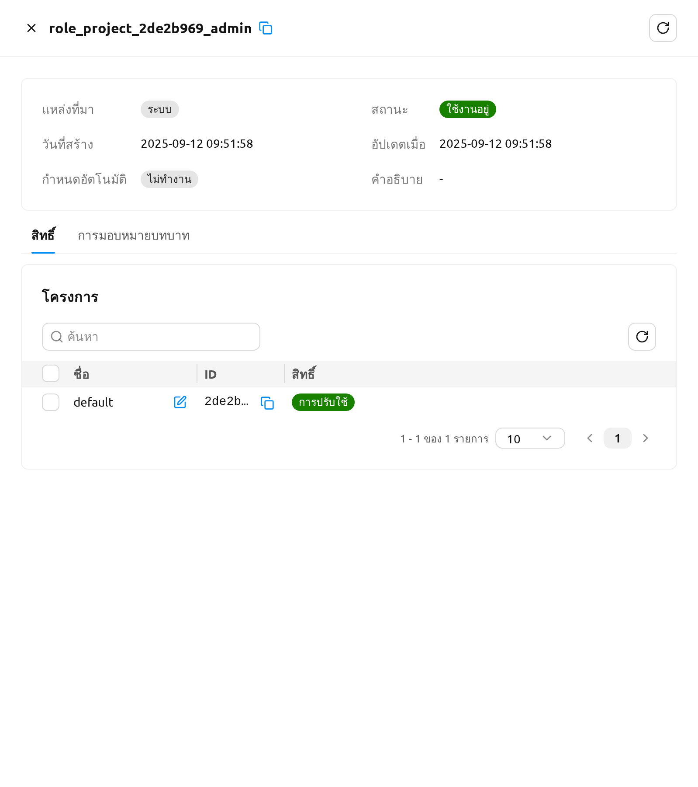
เมื่อมอบสิทธิ์แล้ว ผู้ใช้จะได้รับสิทธิ์ผู้ดูแลโปรเจกต์ทันที เมื่อผู้ใช้เปิดดรอปดาวน์โปรเจกต์ในส่วนหัวในครั้งถัดไป ผู้ใช้จะเห็นป้ายผู้ดูแลโปรเจกต์ถัดจากโปรเจกต์ที่เกี่ยวข้อง รวมถึงรายการแถบด้านข้างสำหรับผู้ดูแลโปรเจกต์ที่อธิบายไว้ในบท ฟีเจอร์สำหรับผู้ดูแลโปรเจกต์